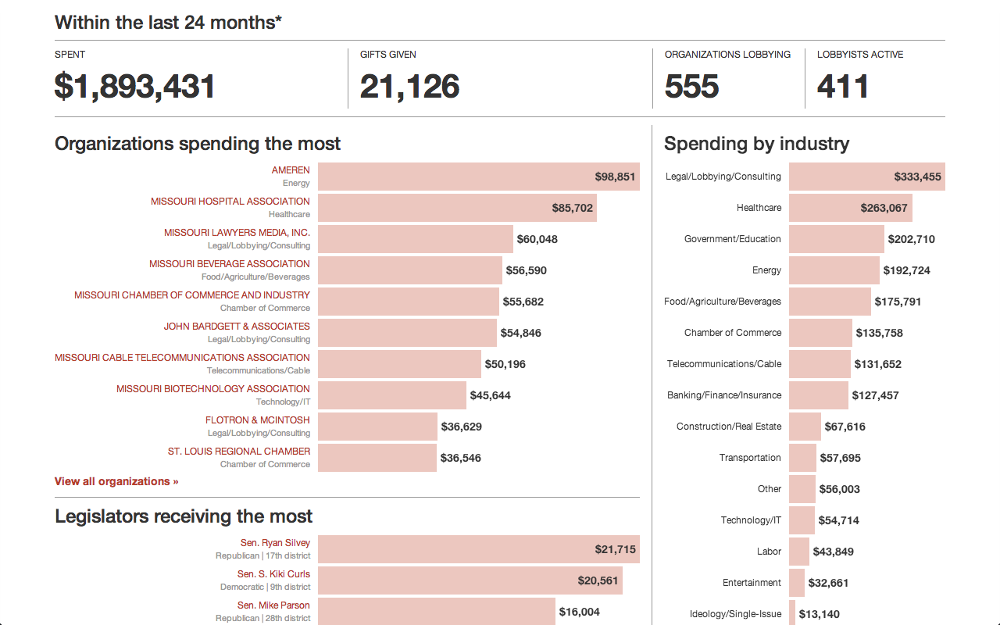
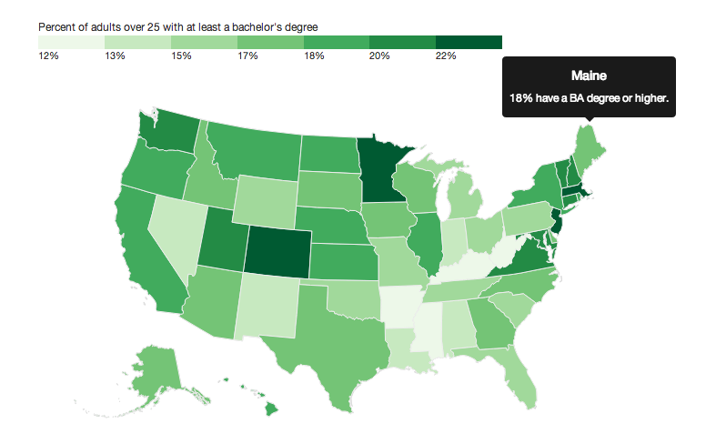
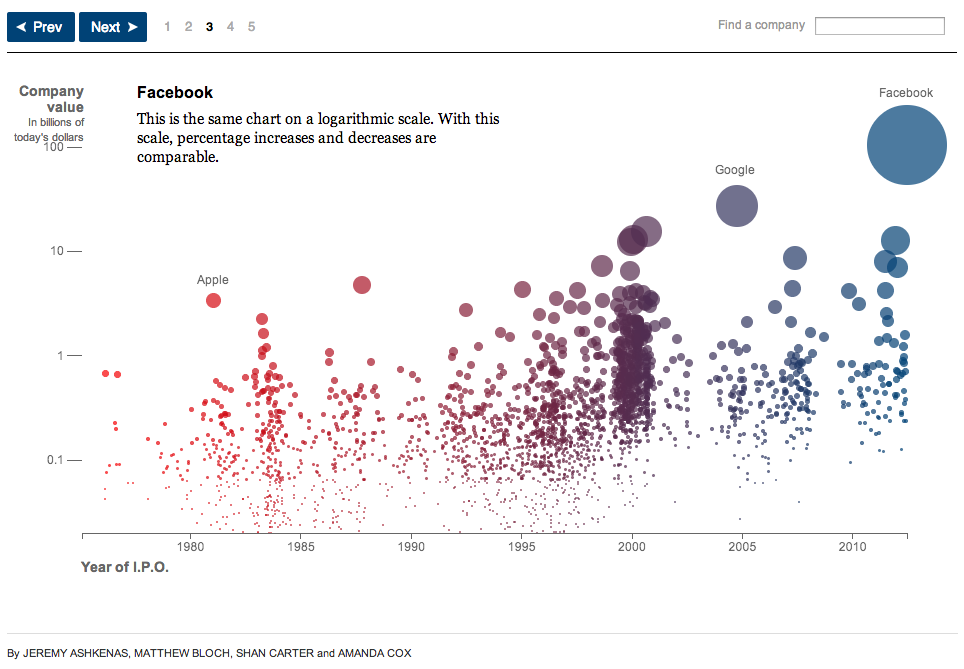
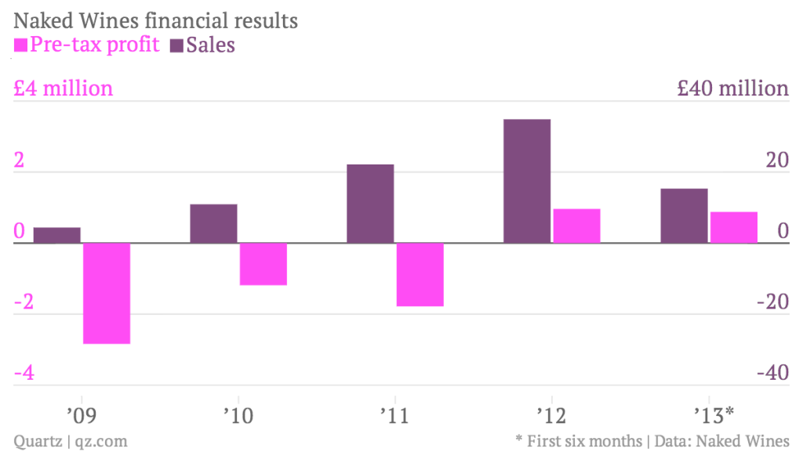

dataviz for everyone
some assumptions:
- you're building for the web (not a native app, or something else)
- you're using HTML, CSS and JavaScript (not Flash or Objective-C or some other awful thing)




“But using a static image feels like cheating...”
“If you ain’t trying to cheat a little, you ain’t likely to win much.” — Richard Petty
there is "The Way"

problem children:
- labels
- legends
- hover
- interaction
- tables
- wide graphics on a small screen (histograms, etc)
- forms